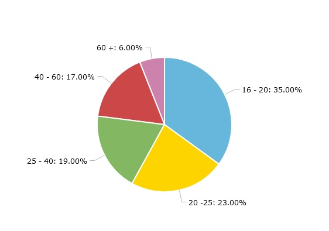
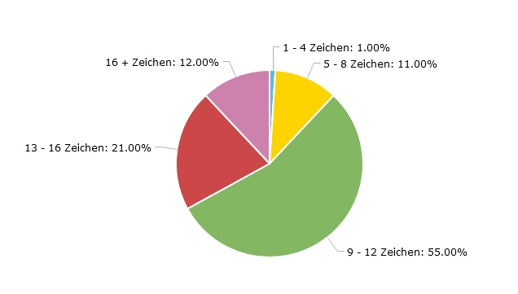
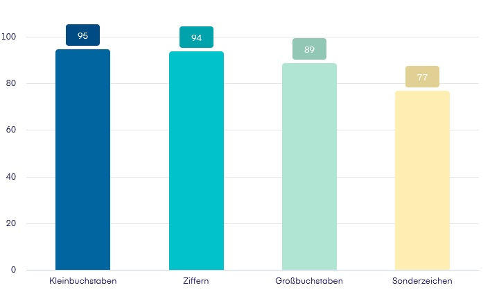
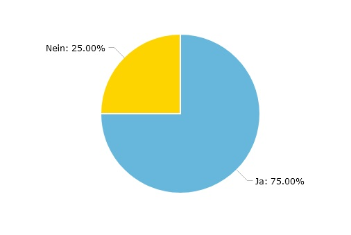
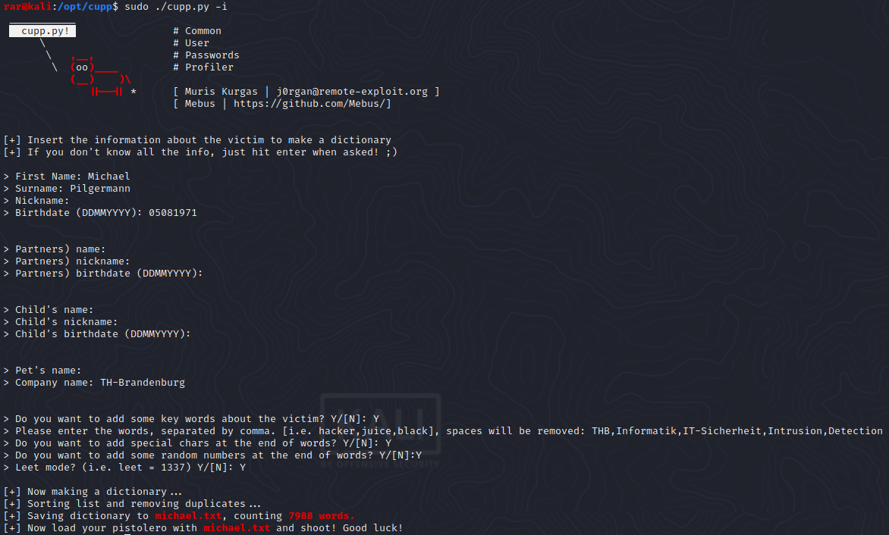
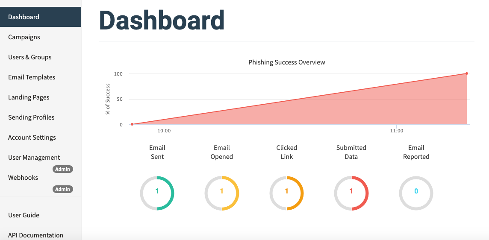
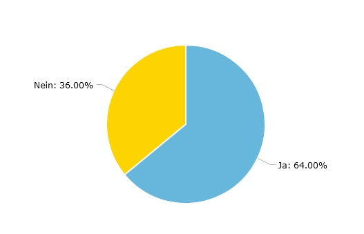
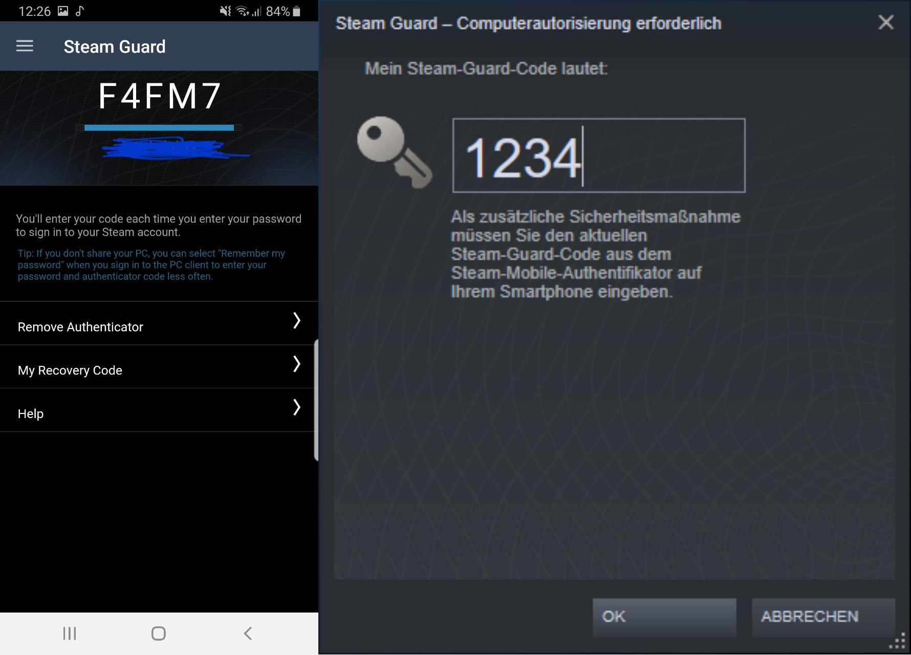

Authentifizierung → Prüfung dieses Identitätsnachweises auf seine Echtheit
Wie kann ich mich noch authentifizieren?




Erzeugt Listen mit Informationen über Opfer 
Bezeichnet das Ausprobieren von Passwörtern
Ist das Abgreifen von Privaten Informationen (E-Mail, Kreditkarten Informationen, Passwörtern) durch gefälschte E-Mail und Webseiten.
Werkzeuge um Phishing Kampagnen zu fahren 

Bezeichnet den Identitätsnachweis eines Nutzers mittels einer Kombination zweier unterschiedlicher und insbesondere unabhängiger Komponenten.

Ein Safe für alle Fälle
Computerprogramm, mit dem sie ihre Passwörter für lokale Anwendungen und Online-Dienste speichern, generieren und verwalten können.
Tets zweier Bekannter Passwortmanger - KeepassXC - Bitwarden
Das Passwort der Zukunft!?
Ist ein Digitaler Schlüssel auf einem Gerät, häufig ein USB-Stick. Prinzip basiert auf Asymmetrischer Kryptografie.
Identitätsnachweis ohne persönliche Daten zu hinterlasse